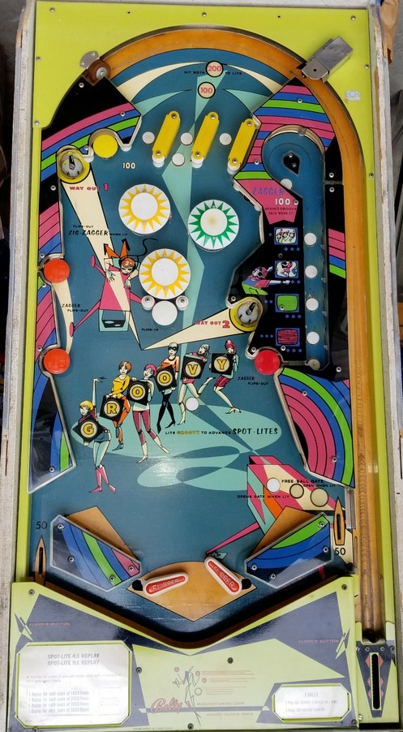

The left and right top lanes score 10 points. The center top lane's value depends on how many wall switches you hit in the top "funnel" before going through a top lane. If neither wall switch is hit, the center top lane scores 10 points and lights the left and lower pop bumpers for 10 points as well. If 1 wall switch is hit, the center top lane scores 100. If both wall switches are hit, the center top lane scores 200.
The left and bottom bumpers score 1 point, or 10 when lit. The right bumper always scores 1 point. If the left and bottom bumpers were not lit from the skill shot, the center rollover button lights them, and also qualifies the Opens Gate rollover button in the lower right.
The white mushroom bumper scores 10 points and zips the flippers together, blocking off the center drain. The orange mushroom bumpers score 10 points, reopen the flippers, add one letter to Groovy, and light one TV in the Zagger lane. Making either saucer opens the flippers; if at least one TV is lit in the Zagger lane, making either saucer also fires a captive ball in the Zagger lane, where each lit TV scores 100 points and a Groovy letter, and each unlit TV scores 10 points. Spelling Groovy lights one numbered spotlight on the backglass. The spotlights are a carryover feature, with extra balls or free games awarded for reaching certain operator-adjustable spotlights.
To open the free ball gate in the right out lane, first press the center rollover button, then press the Opens Gate button near the right slingshot. When the gate is open, one out lane ball will be directed back to the shooter lane for a replunge. If the flippers are zipped together at any point during this process, the Gate will be closed and corresponding buttons unlit; reopening the flippers will restore the gate back to its former state. There is no way to have the flippers closed and the right out lane gate open at the same time. There are no in lanes. Out lanes score 50 points.
There is no end of ball bonus. Replay score backglass spotlight thresholds can award an extra ball instead of a free game, but cannot be set to award points. The tilt penalty is adjustable: tilt can either end only the current ball in play, or the entire game.
The below picture of MiniZag's playfield was taken from the Internet Pinball Database, where it was originally provided by Bruce Zamost.
